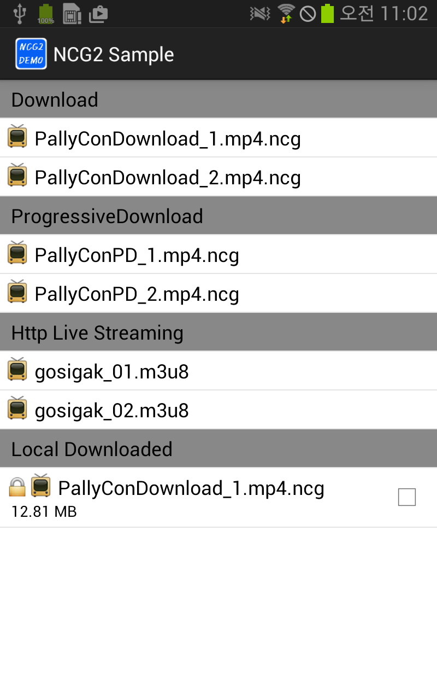
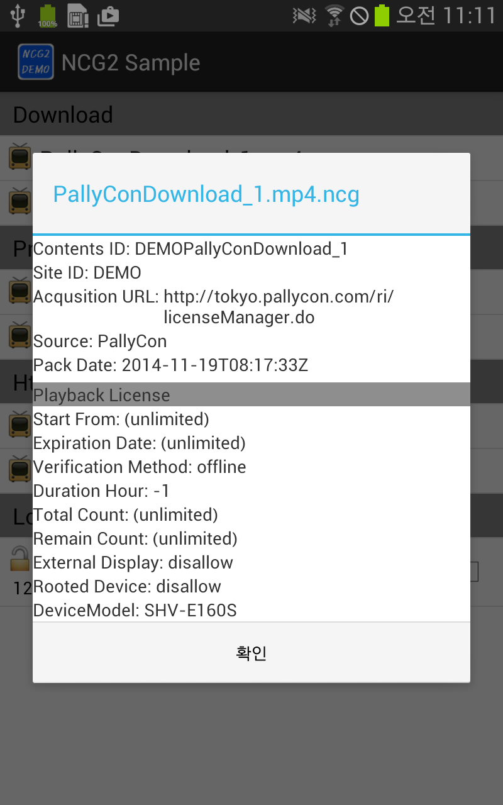

|
NCG SDK for Android Build 20231120
INKA Entworks NCG DRM Library for Android
|
|
NCG SDK for Android Build 20231120
INKA Entworks NCG DRM Library for Android
|
When planning, designing, and implementing Application, it is very important to understand PallyCon SDK. This document helps understand how SDK processes DRM contents in Flow Chat and describes the entire interaction between the operation and roles of SDK in the reflected Sample App ultimately preventing the error in planning/designing Application.
Only when you understand the flow how PallyCon SDK processes DRM contents, you can plan the scenario of Application (App) to be implemented. The following flow chart indicates the flow for SDK to process DRM video contents. The following flow focuses on DRM video contents; besides, audio, document, and picture are also processed in the similar flow.
The following is a description about ‘Flow Chart`.
If you try to play video contents on App
- Determine whether the video content is a DRM file.
- if not a DRM file, since it is not an encrypted file, following the general play procedure as set forth in Step 7.
- If it is a DRM file, find the license as set forth in Step 2.
- If you are trying to find the license of video content,
- if there exists license, confirm the license for validity as set forth in Step 3.
- If there is no license, try to acquire license (from license server) as set forth in Step 4.
- If there exist license for video content, confirm it for validity.
- If it is valid, move to Step 6 for play trying.
- If it is not valid, try to acquire license as set forth in Step 4 (you may also restrict playing).
- Try to acquire license from license server.
- Confirm the issued license for validity.
- If it is valid, move to Step 6 Local Server.
- If it is not valid, restrict playing (which depends on scenario).
- Local WebServer returns virtual URL for Player to play DRM contents.
- Player plays an ordinary normal file or a normal DRM content.
It is a sequence diagram indicating the entire interaction and flow of Sample App to which SDK is applied.
In order for User to use ‘DRM contents, there should be App withSDK (PallyCon SDK)` applied as well as ‘License Server’ should be ready to acquire license for DRM contents.
Depending User event, indicate the acts of App, SDK, and License Server in order, describing such acts focusing on App and SDK.
The following describes the case of DRM Contents, not considering Non-DRM File.
The following describes Sequence Diagram.
If a device is installed an App to which SDK is applied
- init
- When a user runs App, the App carries out initialization work with init function of PallyCon SDK.
- At this time, verify DRM license file and authentication file for validity before loading data.
- You can also set offline policy at the initializing time and reference 'OfflineSupportPolicy' enum class for the details
- Current time is internally set in PallyCon SDK, where time value is periodically updated.
- Check License of Contents
- Verify license of the content for validity before a user plays the content.
- License Acquisition
- If there exists valid license, you skip the process to acquire license.
- If no license, first acquire authentication for device, and then request and acquire license.
- Acquiring license requires calling
aquireLicenseByCIDfor such acquisition when a user knowsaquireLicenseByPath, CID; request HTTP to send it to license server and then interpret HTTP Response to store license. If there need temporary license, you can be acquired a temporary license used temporary parameter.- Playback URL Request
- When the received license is confirmed for validity, call
addLocalFilePathForPlayback,addProgressiveDownloadUrlForPlayback, andaddHttpLiveStreamUrlForPlaybackfunctions of LocalWebserver Interface to request playable virtual URL.- Virtual URL Return
- SDK returns virtual URL of DRM contents that player can play with No. 3 function while player plays and shows it to a user.
- Remove All Temporary License If there acquired temporary license, exit the program or call the
removeAllTemporaryLicense, temporary license is deleted.- App Background Entry
- When a user makes App enter Background while playing DRM content, App stops to run and makes Player reset.
- App Foreground Entry
- When a user makes App situated in Background enter Foreground again, App sets URL again in setDataSource of Player and plays.
SDK Sample App consists of the UIs as shown in the following figure.

List consists ofDownload, ProgressiveDownload, and Http Live Streaming, Local Downloaded; the respective meaning is as shown in the following table.
| Item | Description |
|---|---|
| Download | Download file in remote area |
| Progressive Download(PD) | Play media file in remote area |
| HTTP Live Streaming(HLS) | Play HTTP-based media streaming |
| Local Downloaded | Play media file in device (Local File) |
Download downloads file in remote area.
Progressive Download(PD) downloads the encrypted content file in remote area while playing it. File is downloaded but not stored in a physical file only existing in memory.
HTTP Live Streaming(HLS) is a protocol provided by Apple in 2009 for iOS 3.0 and QuickTime X, which is an HTTP-based media streaming. The information about playing is sent to player using m3u8 file; which is played decrypting the encrypted ‘Key’.
Local Downloaded means to play the encrypted contents in device, which can be a file downloaded or directly placed in App.
Use SDK Sample App Project to conduct play test respectively for each content type (Download, Progressive Download, Http Live Streaming).
| Screenshots |
|---|
| Play |
|  |
| Item Long Click |
Note: - For Progressive Download contents, if moov tag is located behind, the contents may not normally work.
The contents provided for test are shown in the following table.
| Download Contents | |-| | http://cdn.pallycon.com/demo/d/PallyConDownload1.mp4.ncg | | http://cdn.pallycon.com/demo/d/PallyConDownload2.mp4.ncg |
| Progressive Download | |-| | http://cdn.pallycon.com/demo/d/PallyConPD1.mp4.ncg | | http://cdn.pallycon.com/demo/d/PallyConPD2.mp4.ncg |
| HTTP Live Streaming | |-| | http://cdn.pallycon.com/demo/hls/gosigak01/gosigak01.m3u8 | | http://cdn.pallycon.com/demo/hls/gosigak02/gosigak02.m3u8 |